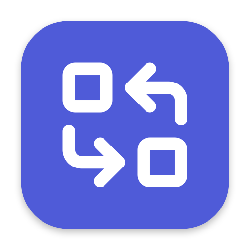

macOS · działa lokalnie · open source
Tłumacz zaznaczenie
⌘C ×2
Zaznacz dowolny tekst i naciśnij Cmd+C dwa razy pod rząd. Tłumaczenie pojawia się w małym panelu przy kursorze. Bez przeglądarki, bez wklejania, bez wysyłania czegokolwiek do chmury.
macOS 26+ · model i silnik pobierają się przy pierwszym użyciu
Dzień dobry, miło Cię poznać.
Trzy ruchy. Bez okna, bez wklejania.
-
1
Zaznacz tekst
W dowolnej aplikacji: przeglądarce, mailu, edytorze, PDF-ie. Cokolwiek umiesz zaznaczyć.
-
2
Naciśnij ⌘C dwa razy
Oba kopiowania działają normalnie. Glosso nasłuchuje tylko podwójnego naciśnięcia, dlatego potrzebuje jednej zgody: Dostępność.
-
3
Czytaj przy kursorze
Panel otwiera się od razu i streamuje tłumaczenie tak, jak produkuje je model. Zostaje pod ręką do edycji.
Tekst nie opuszcza Twojego Maca.
Model językowy (Gemma przez Ollamę) działa lokalnie na localhost. Żadnego konta, żadnego API, żadnej chmury. Działa też offline, a to, co tłumaczysz, zostaje u Ciebie.
Błyskawicznie
Model trzymany w pamięci między tłumaczeniami, wynik streamowany słowo po słowie. Bez rozgrzewki przy każdym użyciu.
Natywnie
Mieszka w pasku menu, nie w Docku. Wygląda i zachowuje się jak część macOS, a nie jak doklejona przeglądarka.
Dwustronnie
Polski ↔ angielski, niemiecki, rosyjski, hiszpański, niderlandzki lub francuski. Kierunek wykrywany automatycznie.
Panel to nie tylko wynik.
To, co dostajesz, możesz od razu poprawić, dopytać i wstawić z powrotem, bez kopiowania na nowo.
-
Czasowniki
Przełącz, co model robi z zaznaczeniem: Tłumacz, Streść (krótka lista) albo Popraw (gramatyka i interpunkcja bez zmiany języka).
-
Ton wypowiedzi
Przy tłumaczeniu przełączaj rejestr: automatyczny, formalny, na luzie. Tekst tłumaczy się ponownie z nowym tonem.
-
Edytowalne źródło
Popraw przechwycony tekst w panelu i przetłumacz ponownie. Literówkę w źródle naprawisz bez wracania do aplikacji.
-
Alternatywy słów
W gotowym tłumaczeniu każde słowo jest klikalne: rozwija listę kontekstowych zamienników i wyjaśnienie „Dlaczego?”. Wybór tłumaczy ten fragment na nowo.
-
Diff gramatyki
Popraw podświetla, co się zmieniło. Stuknij zmianę, żeby poznać powód: jedną linijką, po polsku.
-
Zamień i kopiuj
Wklej wynik prosto na zaznaczony tekst, albo skopiuj całość. Panel przeciągniesz za tło i rozciągniesz za róg.
Albo zupełnie bez panelu
Dwa skróty działają na zaznaczeniu po cichu i wklejają wynik z powrotem na miejsce. Rebindowalne w Ustawieniach.
Krótki przewodnik
1 · Instalacja
- Pobierz
Glosso.zipz Releases, rozpakuj i przeciągnij Glosso.app do Aplikacji. - Kliknij prawym → Otwórz → potwierdź. Robisz to raz: apka jest podpisana, ale nie notaryzowana przez Apple.
- Przyznaj Dostępność, gdy zapyta. To jedyne uprawnienie, jakiego potrzebuje.
- Kreator pierwszego uruchomienia pobierze model i pomoże wybrać drugi język.
2 · Pierwsze tłumaczenie
- Zaznacz zdanie w dowolnej aplikacji.
- Naciśnij ⌘C dwa razy pod rząd.
- Panel otworzy się przy kursorze i zacznie streamować wynik.
- Stuknij słowo po alternatywy, zmień ton albo czasownik, albo po prostu Kopiuj.
3 · Na co dzień
- ⌃⌘G popraw gramatykę zaznaczenia bez panelu.
- ⌃⌘T przetłumacz zaznaczenie w miejscu.
- Esc zamyka najpierw rozwiniętą listę, potem panel.
- Model i drugi język zmienisz w Ustawieniach z paska menu.

Przetłumacz pierwsze zdanie za minutę.
Pobierz, przeciągnij do Aplikacji, zaznacz tekst, ⌘C dwa razy. Reszta dzieje się lokalnie.
Pobierz dla macOS